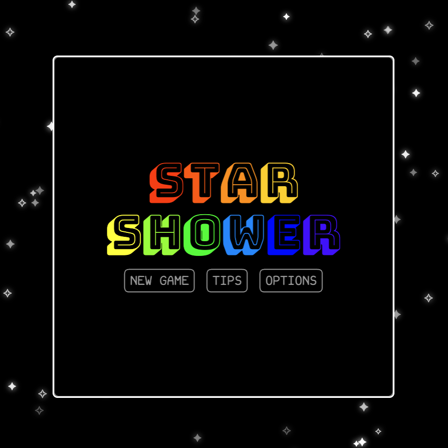

Projects
dev.png

dev.exe
Star Shower
- Purpose:
Create a standalone browser game where players collect falling stars, survive hazards, manage temporary effects, and reach level 10.
- Challenge:
Keep movement, object density, collision feedback, and difficulty balanced across different canvas and screen sizes.
- Solution:
Scale gameplay values from canvas dimensions, replace a laggy multi-ribbon trail with one optimized trail, and separate input, state, drawing, and entity behavior into native JavaScript modules.
- Accessibility:
Support WASD and arrow keys, pointer and touch movement, optional joystick controls, keyboard-navigable menus, and visible focus feedback.
- Lesson:
Treat responsiveness as part of gameplay—not just layout—and favor shared scaling rules, clear module ownership, and repeated testing over isolated visual fixes.